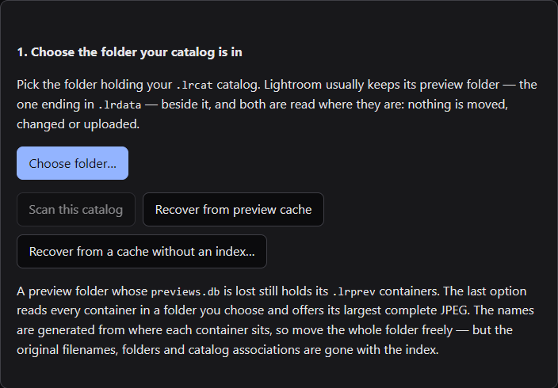
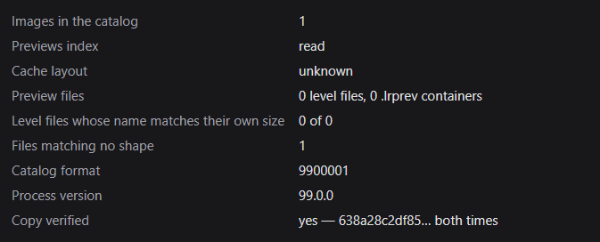

Recover the previews Lightroom kept
If you lost your originals but still have your Lightroom Classic catalog and preview cache, lrsalvage can recover those previews as JPEGs. It processes your files in your browser.
The sample opens with six recoverable previews and needs no files from you.

Practice with a sample catalog
Open a sample here, or download its ZIP to try the folder picker. Extract the ZIP and choose the folder that directly contains Practice.lrcat and Practice Previews.lrdata.
-
Working
Six recoverable JPEGs, including portrait previews and a virtual copy.
-
Mixed results
Four previews selected by default, two small previews you can choose, and two photos with missing previews.
-
Unreadable catalog
The app reports that it could not open the catalog. Try another copy of the catalog if you see this with your own files.
-
Unrecognized preview layout
The app finds a preview file in a layout it cannot read and offers no JPEGs to save.
-
Preview cache without a catalog
Recover two JPEGs, including a smaller surviving level, and see how a missing preview is reported.
The catalogs and metadata are synthetic. Sample photo credits.
Recovery guide
-
Find the catalog and its preview cache
Close Lightroom Classic before working from a backup. Keep any catalog
-waland-shmfiles beside the catalog if your backup has them.Here is what to look for in the folder you choose - Lightroom backupChoose this folder
Travel.lrcatLightroom Classic catalogTravel Previews.lrdataPreview cache withpreviews.dband the preview files
- Lightroom backupChoose this folder
-
Choose the folder and scan
Open the recovery page and choose the folder that holds your catalog. The app looks for a nearby preview cache. If your cache lives elsewhere, choose it separately. Select Scan this catalog. If the catalog is missing or unreadable, select Recover from preview cache and choose the cache folder itself. The cache must contain a readable
previews.db.If the cache has no
previews.db— an older backup, or one whose index was lost — select Recover from a cache without an index… and choose the cache folder. That mode reads each.lrprevcontainer in the folder and offers its largest complete JPEG. The filenames are generated from where each container sits, so the original filenames and folders are not part of it. A scan that failed because the index is missing offers the same mode, on the folder it already holds.
The source screen before choosing a folder. -
Review the previews
Preview quality depends on what Lightroom built and what the cache still holds. A larger preview can be more useful, and some photos may have only a small preview or no preview at all. In catalog recovery, small previews start unchecked. A recovered JPEG cannot recover original raw data or detail that never made it into the preview.

Scan details from the unrecognized layout sample. -
Save to a separate folder
Check the photos you want and choose an empty destination outside your backup. Review the proposed filenames before saving. After the save, use the receipt or File Explorer to find the JPEGs and reports that were written.
Windows and browser requirements
Use the HTTPS page in Chrome or Edge on Windows. The app needs the browser’s local folder picker and origin-private storage. Your browser may ask for permission to read the backup and to write to the destination.
If the browser cannot open folders or you prefer to work offline, use the lrsalvage CLI.
Troubleshooting
- The catalog cannot be read
- Try another intact backup. Check whether the original backup includes catalog sidecars.
- The cache is missing or unreadable
- Choose the matching
Previews.lrdatafolder. Check forpreviews.dbinside it. If that file is gone, Recover from a cache without an index still reads the.lrprevcontainers the folder holds. - There are fewer previews than photos
- Check the scan details for missing files or an unfamiliar cache layout. If you have another backup, try its catalog and matching cache.
Check a Lightroom Classic version
Use a fresh scratch catalog and redistributable test photos you still have. Record the exact Lightroom Classic build. Choose a standard preview size and quality in Catalog Settings, import with Build Previews: Standard, and wait for rendering to finish. Close Lightroom and scan that scratch catalog and its matching cache. Record the recovered previews and their dimensions alongside the app build. Repeat in a new catalog for a 1:1 check. Full Adobe-rendered cache recipe.